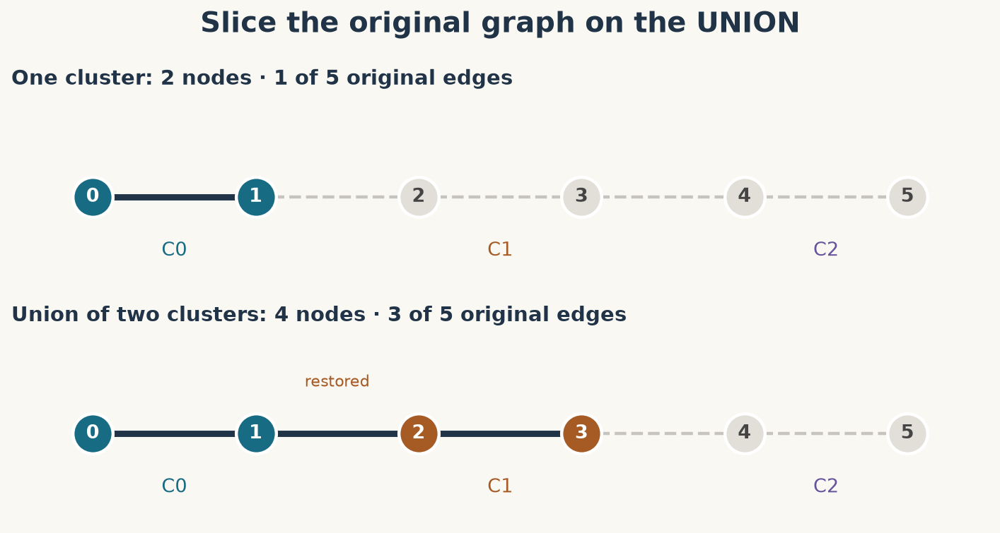
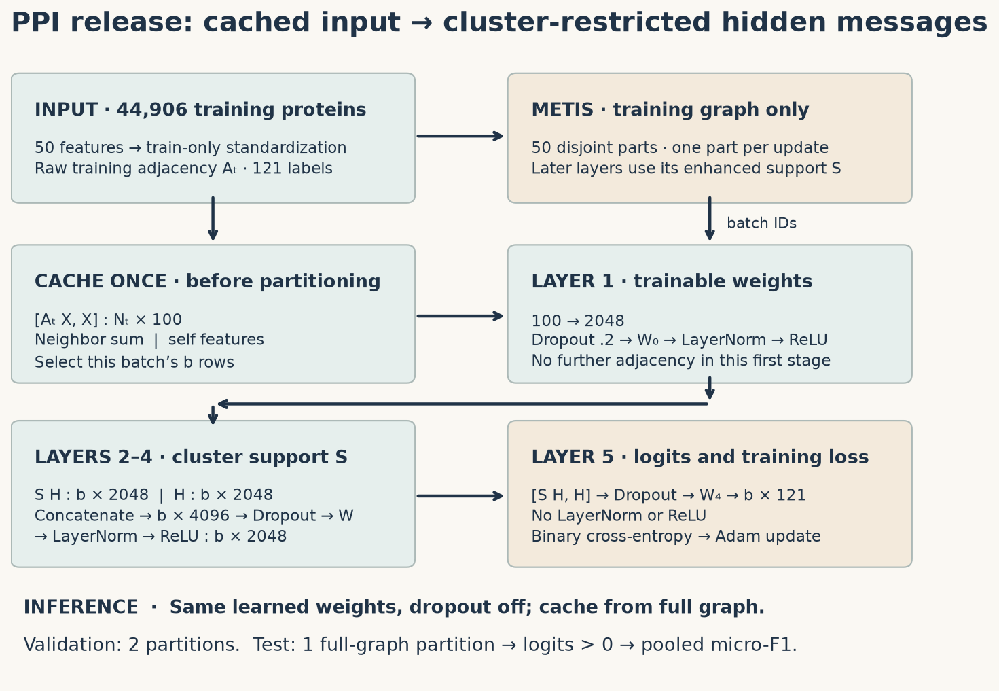
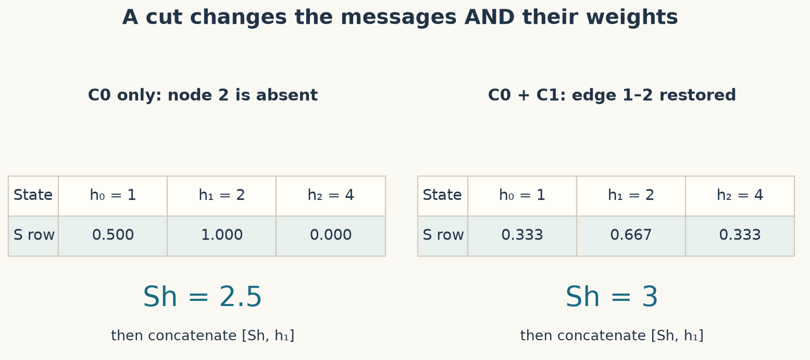
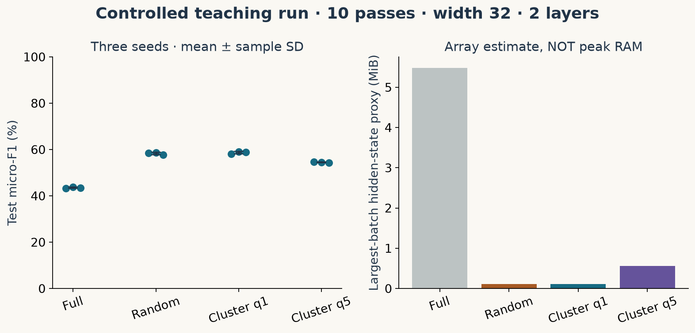

Year 3 · Quarter 1 · Lesson 089
Sampling at scale: Cluster-GCN
0 · Retrieve before reading¶
Your win: build a graph mini-batch that restores every edge between its selected partitions, and explain the memory–information trade-off from your own measurements.
Close the previous lesson. Write answers before opening the explanations: (1) In GraphSAGE, why can a small set of target nodes still require many intermediate nodes? (2) What does an induced subgraph retain? (3) Why must an inductive training graph exclude held-out nodes even if their labels are masked?
Lesson 88 asked which structures an aggregation can distinguish. Expressive aggregation is useful only if we can afford to train it. Lesson 83 controlled cost by sampling neighbors. Here we change which nodes share a training step. This matters for the mission: a relational entity graph may contain millions of rows, and a training method must respect both memory and information-access boundaries.
Primary reading: Chiang et al., Cluster-GCN, KDD 2019, §§3.1–3.3 and Algorithm 1. Read §4.3 and Table 10 for our named reproduction target. The 2019 release supplies concrete settings that the algorithm alone does not.
1 · Why a mini-batch can grow outside its targets¶
In plain terms. To update one node, a deep GNN needs intermediate representations of other nodes. A batch of labels is not the same as a batch of computation.
A full-batch step computes representations for the whole eligible graph before one parameter update. If there are N nodes, L hidden stages and F coordinates per stage, those dense states alone occupy roughly N×L×F numbers. A float32 number needs four bytes. Gradients, parameters, optimizer state, sparse indices and temporary operations add memory beyond this estimate.
Worked example. One million nodes × four stages × 128 coordinates × four bytes is 2.048 billion bytes (about 1.91 GiB) for one copy of those states. This is an accounting example, not a peak-memory measurement.
Neighbor sampling takes a fixed number of neighbors per hop. With 256 target nodes and fanouts 10 then 10, there can be 256 + 2,560 + 25,600 = 28,416 node occurrences before deduplication. The same real node may occur repeatedly. Sampling, deduplication and overlap change actual cost; the product explains the pressure as depth grows.
Cluster sampling instead chooses a fixed set of nodes and reuses those nodes at every layer. More layers add states and operations, but do not recursively expand the node set. The graph and input features may still occupy host memory. Cluster-GCN is not automatically an out-of-core database engine. See paper §3.1 and Table 1.
2 · Partition once; build an induced batch¶
In plain terms. Put strongly connected nodes together so that a small batch keeps many of the messages those nodes need.
A partition splits the eligible nodes into disjoint groups whose union is the whole eligible node set. METIS is a graph partitioner that seeks roughly balanced groups with relatively few edges crossing between groups. Its objective is structural; it does not use the target labels. Cut edges connect different groups. An induced subgraph on B keeps every original edge with both endpoints in B.
Write A[i,j] for the weight of the edge carrying node j's message to node i. For selected node IDs B, the batch adjacency is A[B,B]. Slice both axes in the same node order. A sparse matrix stores only its nonzero entries; there is no reason to allocate a dense million-by-million matrix.
Worked example. A six-node path has five edges: 0–1–2–3–4–5. Partition it into C0={0,1}, C1={2,3}, C2={4,5}. One group keeps one edge. Selecting C0 and C1 gives nodes {0,1,2,3} and three edges, including the restored edge 1–2. Concatenating two pre-cut block matrices would keep only two edges and implement the wrong algorithm.

Indexing checkpoint. Choose C1 followed by C0. The local-to-global IDs are [2,3,0,1]. Global edge 1–2 becomes local edge 3–0. A correct neighbor sum paired with the wrong feature order is still a wrong model. Your first notebook TODO returns both the IDs and the induced adjacency.
3 · Why choose several clusters together?¶
In plain terms. Clustering saves messages within a group. Mixing groups brings some boundary messages back and changes the labels represented in each update.
One fixed cluster per step can omit the same boundary edges repeatedly. Structurally similar nodes can also have similar labels, so different clusters can give very different gradients. A gradient is the change in loss with respect to each trainable parameter. It is the direction used by the optimizer to update weights.
Cluster-GCN's multiple-partition variant shuffles a larger collection of small clusters, then combines q clusters into each induced batch. It uses the original adjacency to restore edges between the chosen groups. q is a number of clusters, not a guaranteed node count; clusters are only approximately balanced. See paper §3.2, Figure 3 and Algorithm 1.
Worked probability. Uniformly sample q of p clusters without replacement. Given that one endpoint's cluster is selected, a different endpoint's cluster is selected with probability (q−1)/(p−1). With p=50 and q=5, that is 4/49, about 8.16%. This is a conditional inclusion probability for a crossing edge in a sampled batch, not the fraction of all edges retained. Within-cluster edges are always present whenever their group is selected.
Missing messages change the function. Normalization, nonlinear activations and several layers mean the mini-batch gradient need not be an unbiased estimate of the full-graph gradient. More mixing can help, but it does not guarantee better accuracy. Increasing q also increases memory and reduces updates per data pass.
Limit case. Choose every cluster: the induced adjacency becomes the full eligible adjacency. With a single full batch, you also get one update per epoch. That changes optimization even when the per-node forward operator is the same.
4 · Model architecture: the released deep PPI model¶
In plain terms. Cluster-GCN chooses the training subgraph. The release also makes specific choices about the GNN that runs inside it. Reproducing its score requires both.
PPI is a protein–protein interaction dataset. Nodes have 50 input features and may carry several of 121 labels simultaneously. The original split has 44,906 training, 6,514 validation and 5,524 test nodes. We standardize each input coordinate using its training-node mean and standard deviation; held-out nodes never fit those statistics. The model predicts a vector of 121 logits, real-valued scores before a sigmoid conversion to probabilities.

First stage: a release detail worth noticing¶
The release precomputes [A_train X, X], a concatenation with 100 columns. A_train is the raw training-induced adjacency. This step occurs before partitioning, so first-hop input messages can cross training-cluster boundaries. It never includes held-out input features during training. The first trainable layer applies dropout, a learned matrix, layer normalization and ReLU to this cached input.
The raw first-layer cache is not the normalized support described next. Substituting a standard GCN layer here would change the released model. See train.py::load_data.
Later stages: strengthen the center, then concatenate¶
Let A_B be a batch's adjacency. Add self-loops with the identity I. Let D contain the row sums of A_B. First form T=(D+I)⁻¹(A_B+I): every row divides by its sum. Then use S=T+λ diag(T), with λ=1. diag(T) keeps only diagonal entries. This diagonal enhancement gives extra weight to a node's own representation. S generally has row sums greater than one; it is not a probability transition matrix.
Worked example. For path node1, use scalar states h0=1,h1=2,h2=4. With all three available, the row of S is [1/3,2/3,1/3], giving 1/3+4/3+4/3=3. If its batch contains only nodes0 and1, the row becomes [1/2,1], giving .5+2=2.5. The batch has changed both the messages and their normalization.

At each later hidden layer, compute [S H, H] W, apply layer normalization, then ReLU. H has b rows, one per batch node; at hidden width2048, the concatenation has4096 columns. The matrix W mixes those columns into2048 output coordinates. Neighbor and self branches have separate columns of W. Layer normalization standardizes coordinates within each node, then learns a scale and offset; it is not a statistic fitted across training and test nodes. ReLU clips negative values to zero. Dropout randomly removes20% of the concatenated input coordinates during training and rescales those retained.
The five-layer recipe has four hidden stages of width2048. Its fifth layer returns121 logits with no normalization or ReLU. All nodes share the same weights at a given depth; different depths have different weights. Binary cross-entropy penalizes each node-label prediction independently, then averages those losses. At evaluation, a label is predicted present exactly when its logit is greater than zero. Micro-F1 pools all node-label true positives, false positives and false negatives: 2TP/(2TP+FP+FN).
Self-loop audit. The PPI archive already includes some loops. The released loader adds adjacency to its transpose, doubling their raw weight. Its q=1 partition builder replaces nonzero weights with1 before support normalization. The precomputed cache and later supports therefore have different loop conventions. Our paper track preserves this; the teaching experiment uses one binary raw graph in every arm. See the reproduction contract for the exact sequence.
Training boundary and inference¶
Training partitions contain only training nodes. Masking held-out labels alone would not enforce this boundary: their features could still enter messages. At validation, the release precomputes from the full graph and uses two partitions. At final test, it uses the full graph as one partition and scores test nodes only. Evaluation therefore has a different propagation context from training. Test labels never enter the forward pass or choose an epoch.
5 · Predict, implement, then measure¶
Prediction before evidence. Write which arm should keep the most edges, which should use the fewest node states, and why neither prediction determines the best test F1.
Open the student lab, prepared lab, or Colab notebook. The solution is for checking after an attempt. The complete model, data loader, partitioner and trainer are visible inline.
- TODO · induced batch. Combine selected partition IDs and recover every original edge between them. CHECK tests an edge that a block-diagonal implementation would lose.
- TODO · enhanced support. Implement the ordered normalization and diagonal adjustment. CHECK includes an isolated node; adding identity makes its support defined.
- TODO · concatenated message. Build neighbor/self branches in the released order. CHECK examines both output values and gradients.
Experiment held fixed: all PPI nodes, original split, train-only scaling, a binary raw graph, two layers,width32,dropout.2,Adam.01,ten data passes,three declared seeds. Varied: full batch;50 random groups;50 METIS clusters with q1;the same50 clusters with q5. Measured: test micro-F1, largest batch, retained adjacency entries, training time, and a dense-hidden-state memory proxy.
Scope check. Equal data passes are not equal updates: the arms make10,500,500 and100 updates respectively. This evaluates the combined batching strategy, not clustering in isolation. The first-hop cache contains all eligible training-neighbor messages in every arm. One dataset and three seeds cannot establish a universal method ranking.
Author-reference measurements, not your current kernel output.
| Arm | Test micro-F1, mean ± sample SD | Largest batch | Retained entries | Hidden-state proxy | Train time |
|---|---|---|---|---|---|
| full | 43.54 ± 0.31% | 44,906 | 100.0% | 5.482 MiB | 2.61 s |
| random | 58.28 ± 0.52% | 899 | 3.6% | 0.110 MiB | 2.78 s |
| cluster1 | 58.69 ± 0.54% | 925 | 61.1% | 0.113 MiB | 3.12 s |
| cluster5 | 54.47 ± 0.23% | 4,618 | 63.8% | 0.564 MiB | 2.88 s |
Sample SD describes three initialization/shuffle runs on one fixed split; it is not uncertainty across datasets. Times are CPU author measurements, averaged across seeds.

The memory column counts one float32 hidden-state array per hidden stage at the largest batch. It excludes parameters, gradients, optimizer buffers, sparse matrices, caches and temporaries. It is not peak RAM or VRAM. Retention counts directed nonzero adjacency entries, including loops; it is not the conditional probability derived in §3. Training time excludes graph preprocessing and evaluation.
Interpretation task. Random grouping and clustering have very different edge retention here. Explain why their F1 values can nevertheless be close: input caching, model width, training duration, optimization and seed variability all matter. Propose an update-matched follow-up before claiming one factor caused the difference.
6 · Full reproduction: one named cell, explicit evidence¶
Target: paper Table10, PPI test micro-F1 99.36%. The release's run_ppi.sh specifies five layers,width2048,50 clusters,q1,400 epochs,dropout.2,diagonal enhancement1 and layer normalization. Table4's width512 belongs to different experiments; copying it would not reproduce this target.
Our full command uses every released training node and all400 epochs. The release keeps final-epoch weights: its patience1000 is longer than the run. We do not substitute a best-validation checkpoint or select from test scores. NumPy shuffle seed1 is retained; fresh PyTorch initialization seed1 is declared. Historical initialization and partition identity cannot be recovered from the paper alone.
python labs/_run_l089.py --preset paper --device cuda \
--seed 1 --output /tmp/l089-full-fresh
python labs/_audit_l089.py --run /tmp/l089-full-fresh
See the environment pins, source hashes, complete protocol audit, and execution ledger. The notebook has a gated full-run cell; the repository includes a persistent Modal operator. A smoke or closer preset is a separately labeled experiment.
Full paper run: NOT_RUN. The full GPU run was blocked: Modal rejected A10G and T4 execution with a payment-method requirement. No GPU training launched. A local full-width update took 2.02s; the released run requires 20,000 updates plus evaluation, beyond this authoring run. Historical result parity: INCOMPARABLE. Full-model one-update preflight and the completed teaching comparison are separate evidence.
Evidence boundary. PyTorch/PyMetis versus historical TensorFlow/METIS, missing original partitions and missing initial weights make historical numerical parity INCOMPARABLE. The source's normalization functions, an independent dense forward calculation, gradient routing, optimizer arithmetic and held-out interventions are checked locally. Those checks support implementation correctness, not a completed paper result. Reddit, Amazon2M and the original timing/memory benchmark remain NOT_RUN.
7 · EXIT: justify the batch you trained¶
Submit l089-exit.json, your three TODO implementations, a table from your own four-arm experiment, and the explanation below. The EXIT writer refuses to mark completion without all12 run records and substantive explanations. Author-reference results are not your live notebook output.
- Trace edge1–2 and the local IDs when C1 and C0 are combined.
- Explain why lost edges can bias the gradient even with uniform cluster selection.
- Distinguish measured F1, estimated hidden-state bytes, and unmeasured peak memory.
- Give one remaining mismatch between the runnable full recipe and historical result parity.
Tomorrow, derive the conditional boundary-edge inclusion probability without opening this page. At the next checkpoint, choose full-batch, neighbor sampling or cluster sampling for a stated graph and memory budget, then defend the information boundary. This connects to the planned Lesson90 checkpoint and later large relational entity graphs.
Ask the teaching agent follow-up questions whenever the normalization, sampling boundary or evidence ledger is unclear. Bring the graph trace or run artifact so feedback can target the actual computation.